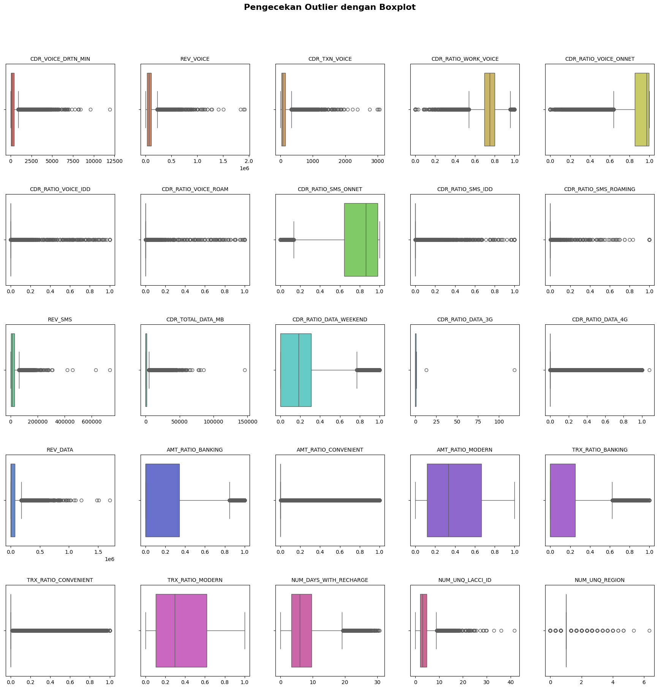
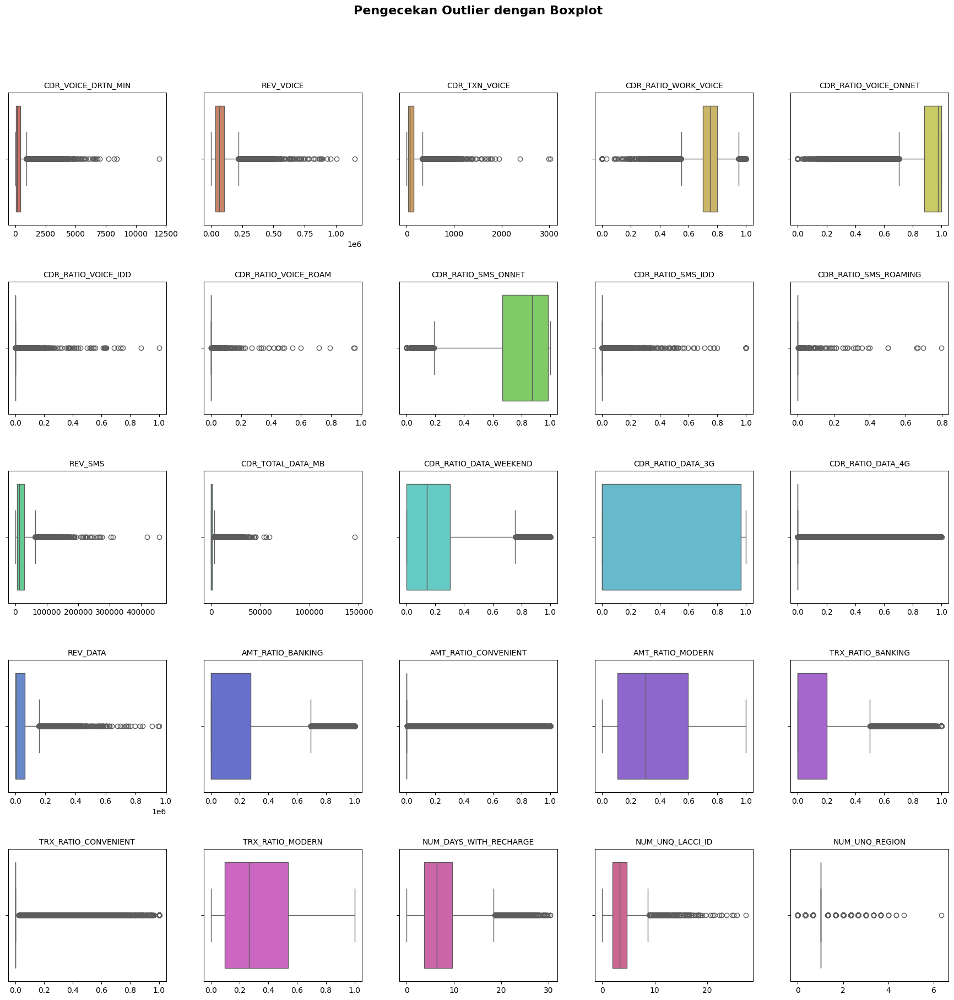
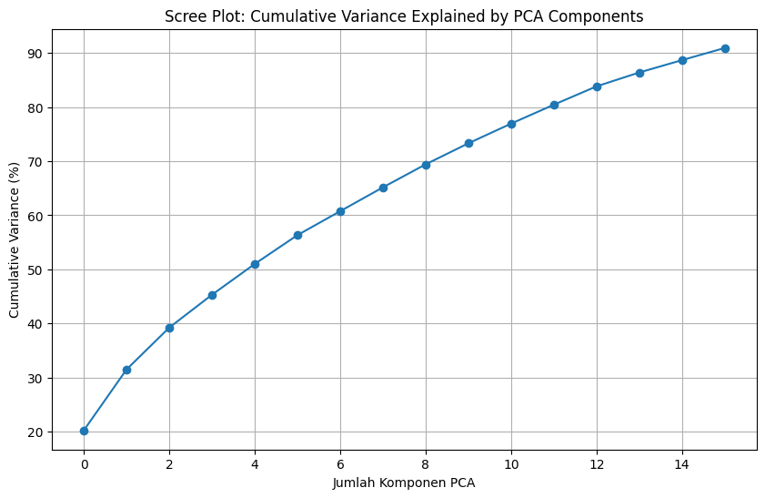
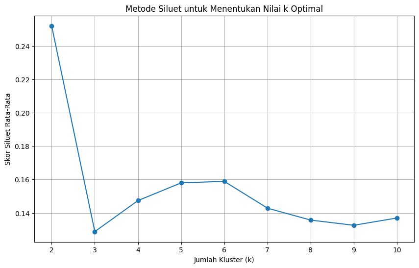
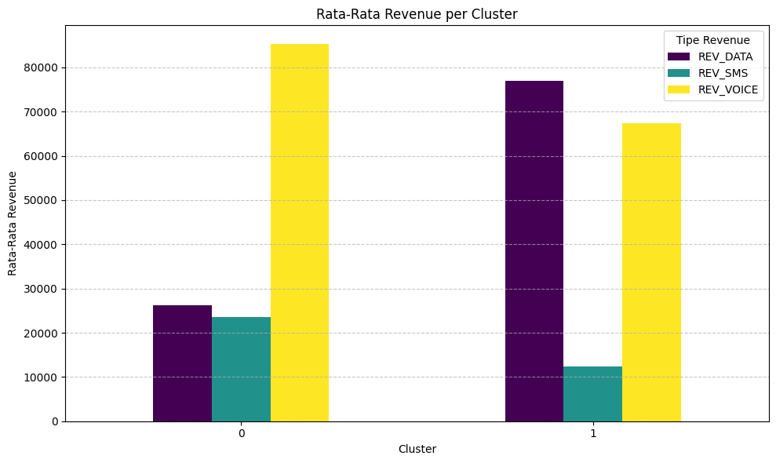
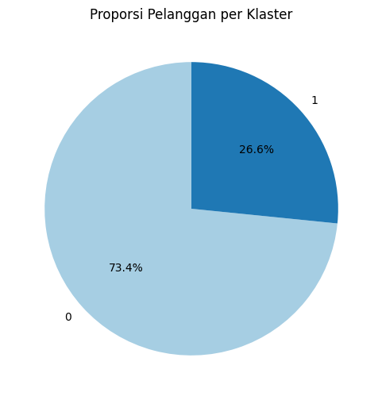

#Import library yang digunakan
import pandas as pd
import numpy as np
import matplotlib.pyplot as plt
import seaborn as sns
from sklearn.preprocessing import StandardScaler, normalize
from sklearn.decomposition import PCA
from sklearn.cluster import KMeans
from sklearn.metrics import silhouette_score
from statsmodels.stats.outliers_influence import variance_inflation_factor
from sklearn.ensemble import IsolationForestTUGAS 1 - CLUSTERING
Anggota Kelompok : - Nisrina Alissy - Jessica Aurelia.P
Import library
EDA
# Menginput data telco
df = pd.read_csv('/content/telco.csv')
df.head()| Unnamed: 0 | CDR_VOICE_DRTN_MIN | REV_VOICE | CDR_TXN_VOICE | CDR_RATIO_WORK_VOICE | CDR_RATIO_VOICE_ONNET | CDR_RATIO_VOICE_IDD | CDR_RATIO_VOICE_ROAM | CDR_RATIO_SMS_ONNET | CDR_RATIO_SMS_IDD | ... | REV_DATA | AMT_RATIO_BANKING | AMT_RATIO_CONVENIENT | AMT_RATIO_MODERN | TRX_RATIO_BANKING | TRX_RATIO_CONVENIENT | TRX_RATIO_MODERN | NUM_DAYS_WITH_RECHARGE | NUM_UNQ_LACCI_ID | NUM_UNQ_REGION | |
|---|---|---|---|---|---|---|---|---|---|---|---|---|---|---|---|---|---|---|---|---|---|
| 0 | 1 | 51.333333 | 77004.666667 | 172.000000 | 0.718000 | 0.990488 | 0.0 | 0.0 | 0.998028 | 0.0 | ... | 23134.0 | 0.000000 | 0.0 | 0.000000 | 0.000 | 0.0 | 0.000000 | 19.000000 | 4.000000 | 1.000000 |
| 1 | 2 | 44.000000 | 37837.333333 | 26.000000 | 0.639181 | 0.807018 | 0.0 | 0.0 | 0.916667 | 0.0 | ... | 4174.0 | 0.000000 | 0.0 | 0.403361 | 0.000 | 0.0 | 0.348214 | 5.000000 | 3.000000 | 2.000000 |
| 2 | 3 | 443.000000 | 218716.666670 | 260.333333 | 0.804948 | 0.997750 | 0.0 | 0.0 | 0.999718 | 0.0 | ... | 47500.5 | 0.524698 | 0.0 | 0.524698 | 0.365 | 0.0 | 0.365000 | 15.666667 | 7.666667 | 1.000000 |
| 3 | 4 | 141.333333 | 138634.000000 | 128.333333 | 0.766392 | 0.940624 | 0.0 | 0.0 | 0.872776 | 0.0 | ... | 0.0 | 0.357143 | 0.0 | 0.446032 | 0.250 | 0.0 | 0.403704 | 5.666667 | 4.333333 | 1.000000 |
| 4 | 5 | 681.333333 | 353258.333330 | 366.666667 | 0.820502 | 0.932896 | 0.0 | 0.0 | 0.826449 | 0.0 | ... | 70000.0 | 1.000000 | 1.0 | 1.000000 | 1.000 | 1.0 | 1.000000 | 5.666667 | 2.666667 | 1.333333 |
5 rows × 26 columns
df.info()<class 'pandas.core.frame.DataFrame'>
RangeIndex: 50000 entries, 0 to 49999
Data columns (total 26 columns):
# Column Non-Null Count Dtype
--- ------ -------------- -----
0 Unnamed: 0 50000 non-null int64
1 CDR_VOICE_DRTN_MIN 50000 non-null float64
2 REV_VOICE 50000 non-null float64
3 CDR_TXN_VOICE 50000 non-null float64
4 CDR_RATIO_WORK_VOICE 50000 non-null float64
5 CDR_RATIO_VOICE_ONNET 50000 non-null float64
6 CDR_RATIO_VOICE_IDD 50000 non-null float64
7 CDR_RATIO_VOICE_ROAM 50000 non-null float64
8 CDR_RATIO_SMS_ONNET 50000 non-null float64
9 CDR_RATIO_SMS_IDD 50000 non-null float64
10 CDR_RATIO_SMS_ROAMING 50000 non-null float64
11 REV_SMS 50000 non-null float64
12 CDR_TOTAL_DATA_MB 50000 non-null float64
13 CDR_RATIO_DATA_WEEKEND 50000 non-null float64
14 CDR_RATIO_DATA_3G 50000 non-null float64
15 CDR_RATIO_DATA_4G 50000 non-null float64
16 REV_DATA 50000 non-null float64
17 AMT_RATIO_BANKING 50000 non-null float64
18 AMT_RATIO_CONVENIENT 50000 non-null float64
19 AMT_RATIO_MODERN 50000 non-null float64
20 TRX_RATIO_BANKING 50000 non-null float64
21 TRX_RATIO_CONVENIENT 50000 non-null float64
22 TRX_RATIO_MODERN 50000 non-null float64
23 NUM_DAYS_WITH_RECHARGE 50000 non-null float64
24 NUM_UNQ_LACCI_ID 50000 non-null float64
25 NUM_UNQ_REGION 50000 non-null float64
dtypes: float64(25), int64(1)
memory usage: 9.9 MB# Menegecek missing value
df.isna().sum()| 0 | |
|---|---|
| Unnamed: 0 | 0 |
| CDR_VOICE_DRTN_MIN | 0 |
| REV_VOICE | 0 |
| CDR_TXN_VOICE | 0 |
| CDR_RATIO_WORK_VOICE | 0 |
| CDR_RATIO_VOICE_ONNET | 0 |
| CDR_RATIO_VOICE_IDD | 0 |
| CDR_RATIO_VOICE_ROAM | 0 |
| CDR_RATIO_SMS_ONNET | 0 |
| CDR_RATIO_SMS_IDD | 0 |
| CDR_RATIO_SMS_ROAMING | 0 |
| REV_SMS | 0 |
| CDR_TOTAL_DATA_MB | 0 |
| CDR_RATIO_DATA_WEEKEND | 0 |
| CDR_RATIO_DATA_3G | 0 |
| CDR_RATIO_DATA_4G | 0 |
| REV_DATA | 0 |
| AMT_RATIO_BANKING | 0 |
| AMT_RATIO_CONVENIENT | 0 |
| AMT_RATIO_MODERN | 0 |
| TRX_RATIO_BANKING | 0 |
| TRX_RATIO_CONVENIENT | 0 |
| TRX_RATIO_MODERN | 0 |
| NUM_DAYS_WITH_RECHARGE | 0 |
| NUM_UNQ_LACCI_ID | 0 |
| NUM_UNQ_REGION | 0 |
#Cek apakah terdapat duplikat data
df.duplicated().any()np.False_#korelasi variabel utama
df[["REV_VOICE", "REV_SMS", "REV_DATA"]].corr()| REV_VOICE | REV_SMS | REV_DATA | |
|---|---|---|---|
| REV_VOICE | 1.000000 | 0.180118 | -0.105760 |
| REV_SMS | 0.180118 | 1.000000 | -0.141815 |
| REV_DATA | -0.105760 | -0.141815 | 1.000000 |
Preprocessing data
#menghapus kolom yang tidak relevan
df=df.drop(columns=['Unnamed: 0'])
df.head()| CDR_VOICE_DRTN_MIN | REV_VOICE | CDR_TXN_VOICE | CDR_RATIO_WORK_VOICE | CDR_RATIO_VOICE_ONNET | CDR_RATIO_VOICE_IDD | CDR_RATIO_VOICE_ROAM | CDR_RATIO_SMS_ONNET | CDR_RATIO_SMS_IDD | CDR_RATIO_SMS_ROAMING | ... | REV_DATA | AMT_RATIO_BANKING | AMT_RATIO_CONVENIENT | AMT_RATIO_MODERN | TRX_RATIO_BANKING | TRX_RATIO_CONVENIENT | TRX_RATIO_MODERN | NUM_DAYS_WITH_RECHARGE | NUM_UNQ_LACCI_ID | NUM_UNQ_REGION | |
|---|---|---|---|---|---|---|---|---|---|---|---|---|---|---|---|---|---|---|---|---|---|
| 0 | 51.333333 | 77004.666667 | 172.000000 | 0.718000 | 0.990488 | 0.0 | 0.0 | 0.998028 | 0.0 | 0.0 | ... | 23134.0 | 0.000000 | 0.0 | 0.000000 | 0.000 | 0.0 | 0.000000 | 19.000000 | 4.000000 | 1.000000 |
| 1 | 44.000000 | 37837.333333 | 26.000000 | 0.639181 | 0.807018 | 0.0 | 0.0 | 0.916667 | 0.0 | 0.0 | ... | 4174.0 | 0.000000 | 0.0 | 0.403361 | 0.000 | 0.0 | 0.348214 | 5.000000 | 3.000000 | 2.000000 |
| 2 | 443.000000 | 218716.666670 | 260.333333 | 0.804948 | 0.997750 | 0.0 | 0.0 | 0.999718 | 0.0 | 0.0 | ... | 47500.5 | 0.524698 | 0.0 | 0.524698 | 0.365 | 0.0 | 0.365000 | 15.666667 | 7.666667 | 1.000000 |
| 3 | 141.333333 | 138634.000000 | 128.333333 | 0.766392 | 0.940624 | 0.0 | 0.0 | 0.872776 | 0.0 | 0.0 | ... | 0.0 | 0.357143 | 0.0 | 0.446032 | 0.250 | 0.0 | 0.403704 | 5.666667 | 4.333333 | 1.000000 |
| 4 | 681.333333 | 353258.333330 | 366.666667 | 0.820502 | 0.932896 | 0.0 | 0.0 | 0.826449 | 0.0 | 0.0 | ... | 70000.0 | 1.000000 | 1.0 | 1.000000 | 1.000 | 1.0 | 1.000000 | 5.666667 | 2.666667 | 1.333333 |
5 rows × 25 columns
#ringkasan statistik
df.describe()| CDR_VOICE_DRTN_MIN | REV_VOICE | CDR_TXN_VOICE | CDR_RATIO_WORK_VOICE | CDR_RATIO_VOICE_ONNET | CDR_RATIO_VOICE_IDD | CDR_RATIO_VOICE_ROAM | CDR_RATIO_SMS_ONNET | CDR_RATIO_SMS_IDD | CDR_RATIO_SMS_ROAMING | ... | REV_DATA | AMT_RATIO_BANKING | AMT_RATIO_CONVENIENT | AMT_RATIO_MODERN | TRX_RATIO_BANKING | TRX_RATIO_CONVENIENT | TRX_RATIO_MODERN | NUM_DAYS_WITH_RECHARGE | NUM_UNQ_LACCI_ID | NUM_UNQ_REGION | |
|---|---|---|---|---|---|---|---|---|---|---|---|---|---|---|---|---|---|---|---|---|---|
| count | 50000.000000 | 5.000000e+04 | 50000.000000 | 50000.000000 | 50000.000000 | 50000.000000 | 50000.000000 | 50000.000000 | 50000.000000 | 50000.000000 | ... | 5.000000e+04 | 50000.000000 | 50000.000000 | 50000.000000 | 50000.000000 | 50000.000000 | 50000.000000 | 50000.000000 | 50000.000000 | 50000.000000 |
| mean | 333.997703 | 8.342499e+04 | 120.899297 | 0.733704 | 0.882236 | 0.003821 | 0.002507 | 0.772195 | 0.007842 | 0.001623 | ... | 4.891276e+04 | 0.209734 | 0.101308 | 0.404954 | 0.181358 | 0.090043 | 0.378675 | 7.130740 | 3.675333 | 1.086187 |
| std | 542.590538 | 8.164276e+04 | 154.433260 | 0.141131 | 0.196528 | 0.041535 | 0.038176 | 0.255418 | 0.060520 | 0.031391 | ... | 8.156402e+04 | 0.310394 | 0.248642 | 0.334208 | 0.289144 | 0.231538 | 0.325839 | 4.881555 | 2.439247 | 0.308524 |
| min | 0.000000 | 0.000000e+00 | 0.000000 | 0.000000 | 0.000000 | 0.000000 | 0.000000 | 0.000000 | 0.000000 | 0.000000 | ... | 0.000000e+00 | 0.000000 | 0.000000 | 0.000000 | 0.000000 | 0.000000 | 0.000000 | 0.000000 | 0.000000 | 0.000000 |
| 25% | 40.333333 | 3.119683e+04 | 29.333333 | 0.697431 | 0.854572 | 0.000000 | 0.000000 | 0.642857 | 0.000000 | 0.000000 | ... | 0.000000e+00 | 0.000000 | 0.000000 | 0.117647 | 0.000000 | 0.000000 | 0.105123 | 3.333333 | 2.000000 | 1.000000 |
| 50% | 141.666667 | 6.588567e+04 | 71.000000 | 0.749895 | 0.970746 | 0.000000 | 0.000000 | 0.862800 | 0.000000 | 0.000000 | ... | 8.259167e+03 | 0.000000 | 0.000000 | 0.333333 | 0.000000 | 0.000000 | 0.294872 | 6.000000 | 3.000000 | 1.000000 |
| 75% | 396.000000 | 1.097822e+05 | 151.000000 | 0.801583 | 0.997268 | 0.000000 | 0.000000 | 0.981594 | 0.000000 | 0.000000 | ... | 7.352200e+04 | 0.339367 | 0.000000 | 0.666667 | 0.250000 | 0.000000 | 0.619051 | 9.666667 | 4.666667 | 1.000000 |
| max | 11913.000000 | 1.914517e+06 | 3056.333333 | 1.000000 | 1.000000 | 1.000000 | 1.000000 | 1.000000 | 1.000000 | 1.000000 | ... | 1.698044e+06 | 1.000000 | 1.000000 | 1.000000 | 1.000000 | 1.000000 | 1.000000 | 30.666667 | 41.666667 | 6.333333 |
8 rows × 25 columns
# Mengecek multikolinieritas
from statsmodels.stats.outliers_influence import variance_inflation_factor
X = df
# VIF dataframe
vif_data = pd.DataFrame()
vif_data["feature"] = X.columns
# calculating VIF for each feature
vif_data["VIF"] = [variance_inflation_factor(X.values, i)
for i in range(len(X.columns))]
display(vif_data)| feature | VIF | |
|---|---|---|
| 0 | CDR_VOICE_DRTN_MIN | 2.260790 |
| 1 | REV_VOICE | 3.569828 |
| 2 | CDR_TXN_VOICE | 3.350602 |
| 3 | CDR_RATIO_WORK_VOICE | 27.639983 |
| 4 | CDR_RATIO_VOICE_ONNET | 34.562317 |
| 5 | CDR_RATIO_VOICE_IDD | 1.107698 |
| 6 | CDR_RATIO_VOICE_ROAM | 1.666900 |
| 7 | CDR_RATIO_SMS_ONNET | 14.165823 |
| 8 | CDR_RATIO_SMS_IDD | 1.105021 |
| 9 | CDR_RATIO_SMS_ROAMING | 1.652733 |
| 10 | REV_SMS | 2.221489 |
| 11 | CDR_TOTAL_DATA_MB | 3.150123 |
| 12 | CDR_RATIO_DATA_WEEKEND | 1.846211 |
| 13 | CDR_RATIO_DATA_3G | 1.561180 |
| 14 | CDR_RATIO_DATA_4G | 1.534082 |
| 15 | REV_DATA | 3.686254 |
| 16 | AMT_RATIO_BANKING | 39.519334 |
| 17 | AMT_RATIO_CONVENIENT | 29.411347 |
| 18 | AMT_RATIO_MODERN | 74.277904 |
| 19 | TRX_RATIO_BANKING | 39.920859 |
| 20 | TRX_RATIO_CONVENIENT | 30.409453 |
| 21 | TRX_RATIO_MODERN | 71.865580 |
| 22 | NUM_DAYS_WITH_RECHARGE | 10.356560 |
| 23 | NUM_UNQ_LACCI_ID | 9.161961 |
| 24 | NUM_UNQ_REGION | 12.394358 |
# Boxplot untuk mengecek outlier (dengan data awal)
kolom_numerik = df.describe().columns[:25]
# Buat palet
palette = sns.color_palette("hls", len(kolom_numerik))
plt.figure(figsize=(18, 18))
# Loop melalui kolom dan indeks
for i in enumerate(kolom_numerik):
# i[0] adalah indeks (0, 1, 2...), i[1] adalah nama kolom
plt.subplot(5, 5, i[0] + 1)
sns.boxplot(
x=df[i[1]],
color=palette[i[0]]
)
plt.title(i[1], fontsize=10)
plt.xlabel('')
plt.suptitle("Pengecekan Outlier dengan Boxplot", y=1.02, fontsize=16, fontweight='bold')
plt.tight_layout(pad=3.0) # Menambahkan padding agar lebih rapi
plt.show()
# handle outlier
model_if = IsolationForest(contamination='auto', random_state=42)
df['outlier_flag'] = model_if.fit_predict(df)
# Filter: Ambil hanya data 'normal' (flag == 1)
df_cleaned = df[df['outlier_flag'] == 1].drop(columns=['outlier_flag'])
df_cleaned.head()| CDR_VOICE_DRTN_MIN | REV_VOICE | CDR_TXN_VOICE | CDR_RATIO_WORK_VOICE | CDR_RATIO_VOICE_ONNET | CDR_RATIO_VOICE_IDD | CDR_RATIO_VOICE_ROAM | CDR_RATIO_SMS_ONNET | CDR_RATIO_SMS_IDD | CDR_RATIO_SMS_ROAMING | ... | REV_DATA | AMT_RATIO_BANKING | AMT_RATIO_CONVENIENT | AMT_RATIO_MODERN | TRX_RATIO_BANKING | TRX_RATIO_CONVENIENT | TRX_RATIO_MODERN | NUM_DAYS_WITH_RECHARGE | NUM_UNQ_LACCI_ID | NUM_UNQ_REGION | |
|---|---|---|---|---|---|---|---|---|---|---|---|---|---|---|---|---|---|---|---|---|---|
| 0 | 51.333333 | 77004.666667 | 172.000000 | 0.718000 | 0.990488 | 0.0 | 0.0 | 0.998028 | 0.0 | 0.0 | ... | 23134.000000 | 0.000000 | 0.0 | 0.000000 | 0.000 | 0.0 | 0.000000 | 19.000000 | 4.000000 | 1.0 |
| 1 | 44.000000 | 37837.333333 | 26.000000 | 0.639181 | 0.807018 | 0.0 | 0.0 | 0.916667 | 0.0 | 0.0 | ... | 4174.000000 | 0.000000 | 0.0 | 0.403361 | 0.000 | 0.0 | 0.348214 | 5.000000 | 3.000000 | 2.0 |
| 2 | 443.000000 | 218716.666670 | 260.333333 | 0.804948 | 0.997750 | 0.0 | 0.0 | 0.999718 | 0.0 | 0.0 | ... | 47500.500000 | 0.524698 | 0.0 | 0.524698 | 0.365 | 0.0 | 0.365000 | 15.666667 | 7.666667 | 1.0 |
| 3 | 141.333333 | 138634.000000 | 128.333333 | 0.766392 | 0.940624 | 0.0 | 0.0 | 0.872776 | 0.0 | 0.0 | ... | 0.000000 | 0.357143 | 0.0 | 0.446032 | 0.250 | 0.0 | 0.403704 | 5.666667 | 4.333333 | 1.0 |
| 5 | 385.666667 | 23870.000000 | 33.333333 | 0.623482 | 0.974359 | 0.0 | 0.0 | 0.995651 | 0.0 | 0.0 | ... | 26948.333333 | 0.000000 | 0.0 | 0.000000 | 0.000 | 0.0 | 0.000000 | 12.000000 | 3.000000 | 1.0 |
5 rows × 25 columns
# Outlier
outliers = df[df['outlier_flag'] == -1]
print("Outliers detected:\n", outliers)Outliers detected:
CDR_VOICE_DRTN_MIN REV_VOICE CDR_TXN_VOICE CDR_RATIO_WORK_VOICE \
4 681.333333 353258.33333 366.666667 0.820502
24 3382.333333 32257.00000 125.666667 0.696068
33 16.500000 18129.00000 7.000000 0.857143
45 5528.333333 291614.33333 362.000000 0.734894
55 0.000000 0.00000 0.000000 0.000000
... ... ... ... ...
49886 97.666667 166750.00000 76.666667 0.872727
49916 1.000000 5762.00000 8.000000 0.477273
49928 627.333333 203404.33333 336.666667 0.742132
49966 5.333333 10256.00000 7.333333 0.529304
49999 0.000000 0.00000 0.000000 0.000000
CDR_RATIO_VOICE_ONNET CDR_RATIO_VOICE_IDD CDR_RATIO_VOICE_ROAM \
4 0.932896 0.0 0.000000
24 0.997475 0.0 0.000000
33 1.000000 0.0 0.000000
45 1.000000 0.0 0.000000
55 0.000000 0.0 0.000000
... ... ... ...
49886 0.329138 0.0 0.000000
49916 0.825758 0.0 0.090909
49928 0.991662 0.0 0.000000
49966 1.000000 0.0 0.000000
49999 0.000000 0.0 0.000000
CDR_RATIO_SMS_ONNET CDR_RATIO_SMS_IDD CDR_RATIO_SMS_ROAMING ... \
4 0.826449 0.000000 0.0 ...
24 0.811111 0.000000 0.0 ...
33 0.638889 0.000000 0.0 ...
45 1.000000 0.000000 0.0 ...
55 0.000000 0.000000 0.0 ...
... ... ... ... ...
49886 0.706475 0.052632 0.0 ...
49916 0.819444 0.000000 0.0 ...
49928 0.903182 0.000000 0.0 ...
49966 1.000000 0.000000 0.0 ...
49999 1.000000 0.000000 0.0 ...
AMT_RATIO_BANKING AMT_RATIO_CONVENIENT AMT_RATIO_MODERN \
4 1.000000 1.000000 1.000000
24 1.000000 0.833333 1.000000
33 1.000000 1.000000 1.000000
45 0.000000 0.000000 0.062211
55 0.000000 0.000000 0.000000
... ... ... ...
49886 1.000000 1.000000 1.000000
49916 0.555556 0.962963 1.000000
49928 0.476706 0.476706 0.491521
49966 0.683721 0.683721 0.683721
49999 0.000000 0.270270 0.270270
TRX_RATIO_BANKING TRX_RATIO_CONVENIENT TRX_RATIO_MODERN \
4 1.000000 1.000000 1.000000
24 1.000000 0.888889 1.000000
33 1.000000 1.000000 1.000000
45 0.000000 0.000000 0.049351
55 0.000000 0.000000 0.000000
... ... ... ...
49886 1.000000 1.000000 1.000000
49916 0.333333 0.833333 1.000000
49928 0.318277 0.318277 0.350023
49966 0.750000 0.750000 0.750000
49999 0.000000 0.200000 0.200000
NUM_DAYS_WITH_RECHARGE NUM_UNQ_LACCI_ID NUM_UNQ_REGION outlier_flag
4 5.666667 2.666667 1.333333 -1
24 2.333333 1.000000 1.000000 -1
33 1.333333 1.000000 1.000000 -1
45 29.000000 28.333333 1.000000 -1
55 0.666667 0.666667 0.666667 -1
... ... ... ... ...
49886 1.000000 0.666667 0.666667 -1
49916 1.666667 0.666667 0.666667 -1
49928 14.000000 7.666667 1.000000 -1
49966 2.666667 1.666667 1.000000 -1
49999 3.333333 2.000000 1.000000 -1
[4366 rows x 26 columns]df_cleaned.describe()| CDR_VOICE_DRTN_MIN | REV_VOICE | CDR_TXN_VOICE | CDR_RATIO_WORK_VOICE | CDR_RATIO_VOICE_ONNET | CDR_RATIO_VOICE_IDD | CDR_RATIO_VOICE_ROAM | CDR_RATIO_SMS_ONNET | CDR_RATIO_SMS_IDD | CDR_RATIO_SMS_ROAMING | ... | REV_DATA | AMT_RATIO_BANKING | AMT_RATIO_CONVENIENT | AMT_RATIO_MODERN | TRX_RATIO_BANKING | TRX_RATIO_CONVENIENT | TRX_RATIO_MODERN | NUM_DAYS_WITH_RECHARGE | NUM_UNQ_LACCI_ID | NUM_UNQ_REGION | |
|---|---|---|---|---|---|---|---|---|---|---|---|---|---|---|---|---|---|---|---|---|---|
| count | 45634.000000 | 4.563400e+04 | 45634.000000 | 45634.000000 | 45634.000000 | 45634.000000 | 45634.000000 | 45634.000000 | 45634.000000 | 45634.000000 | ... | 45634.000000 | 45634.000000 | 45634.000000 | 45634.000000 | 45634.000000 | 45634.000000 | 45634.000000 | 45634.000000 | 45634.000000 | 45634.000000 |
| mean | 328.735957 | 8.047251e+04 | 118.849378 | 0.740520 | 0.901407 | 0.001602 | 0.000466 | 0.788480 | 0.003561 | 0.000306 | ... | 39720.463204 | 0.172508 | 0.061487 | 0.369573 | 0.143968 | 0.051406 | 0.342874 | 7.279229 | 3.744401 | 1.082227 |
| std | 506.865279 | 6.910047e+04 | 141.902825 | 0.118895 | 0.165909 | 0.018656 | 0.012080 | 0.239729 | 0.030797 | 0.009858 | ... | 64337.021063 | 0.271607 | 0.180302 | 0.312998 | 0.244831 | 0.158618 | 0.302012 | 4.730899 | 2.303407 | 0.287404 |
| min | 0.000000 | 0.000000e+00 | 0.000000 | 0.000000 | 0.000000 | 0.000000 | 0.000000 | 0.000000 | 0.000000 | 0.000000 | ... | 0.000000 | 0.000000 | 0.000000 | 0.000000 | 0.000000 | 0.000000 | 0.000000 | 0.000000 | 0.000000 | 0.000000 |
| 25% | 45.000000 | 3.313833e+04 | 31.666667 | 0.699791 | 0.880217 | 0.000000 | 0.000000 | 0.666667 | 0.000000 | 0.000000 | ... | 0.000000 | 0.000000 | 0.000000 | 0.105978 | 0.000000 | 0.000000 | 0.094771 | 3.666667 | 2.000000 | 1.000000 |
| 50% | 147.333333 | 6.634333e+04 | 73.000000 | 0.750000 | 0.975502 | 0.000000 | 0.000000 | 0.874641 | 0.000000 | 0.000000 | ... | 4410.000000 | 0.000000 | 0.000000 | 0.300000 | 0.000000 | 0.000000 | 0.265115 | 6.333333 | 3.333333 | 1.000000 |
| 75% | 398.000000 | 1.076764e+05 | 150.666667 | 0.800258 | 0.997877 | 0.000000 | 0.000000 | 0.984800 | 0.000000 | 0.000000 | ... | 62592.916667 | 0.277778 | 0.000000 | 0.597884 | 0.200000 | 0.000000 | 0.538370 | 9.666667 | 4.666667 | 1.000000 |
| max | 11913.000000 | 1.149560e+06 | 3021.333333 | 1.000000 | 1.000000 | 1.000000 | 0.957265 | 1.000000 | 1.000000 | 0.798165 | ... | 955873.333330 | 1.000000 | 1.000000 | 1.000000 | 1.000000 | 1.000000 | 1.000000 | 30.333333 | 27.333333 | 6.333333 |
8 rows × 25 columns
# Boxplot untuk mengecek outlier (dengan data yang sudah dibersihkan)
kolom_numerik = df_cleaned.describe().columns[:25]
# Buat palet
palette = sns.color_palette("hls", len(kolom_numerik))
plt.figure(figsize=(18, 18))
# Loop melalui kolom dan indeks
for i in enumerate(kolom_numerik):
# i[0] adalah indeks (0, 1, 2...), i[1] adalah nama kolom
plt.subplot(5, 5, i[0] + 1)
sns.boxplot(
x=df_cleaned[i[1]],
color=palette[i[0]]
)
plt.title(i[1], fontsize=10)
plt.xlabel('')
plt.suptitle("Pengecekan Outlier dengan Boxplot", y=1.02, fontsize=16, fontweight='bold')
plt.tight_layout(pad=3.0) # Menambahkan padding agar lebih rapi
plt.show()
transformasi data
#Standarisasi data
dc = df_cleaned
sc = StandardScaler()
dfstd = sc.fit_transform(dc.astype(float))
dfstd = pd.DataFrame(dfstd, columns=dc.columns)
display(dfstd)| CDR_VOICE_DRTN_MIN | REV_VOICE | CDR_TXN_VOICE | CDR_RATIO_WORK_VOICE | CDR_RATIO_VOICE_ONNET | CDR_RATIO_VOICE_IDD | CDR_RATIO_VOICE_ROAM | CDR_RATIO_SMS_ONNET | CDR_RATIO_SMS_IDD | CDR_RATIO_SMS_ROAMING | ... | REV_DATA | AMT_RATIO_BANKING | AMT_RATIO_CONVENIENT | AMT_RATIO_MODERN | TRX_RATIO_BANKING | TRX_RATIO_CONVENIENT | TRX_RATIO_MODERN | NUM_DAYS_WITH_RECHARGE | NUM_UNQ_LACCI_ID | NUM_UNQ_REGION | |
|---|---|---|---|---|---|---|---|---|---|---|---|---|---|---|---|---|---|---|---|---|---|
| 0 | -0.547297 | -0.050186 | 0.374561 | -0.189414 | 0.536934 | -0.085857 | -0.038577 | 0.874110 | -0.115625 | -0.031008 | ... | -0.257809 | -0.635144 | -0.341028 | -1.180764 | -0.588036 | -0.324092 | -1.135310 | 2.477520 | 0.110967 | -0.286104 |
| 1 | -0.561765 | -0.617009 | -0.654324 | -0.852348 | -0.568931 | -0.085857 | -0.038577 | 0.534719 | -0.115625 | -0.031008 | ... | -0.552510 | -0.635144 | -0.341028 | 0.107952 | -0.588036 | -0.324092 | 0.017683 | -0.481780 | -0.323177 | 3.193351 |
| 2 | 0.225435 | 2.000647 | 0.997059 | 0.541895 | 0.580700 | -0.085857 | -0.038577 | 0.881163 | -0.115625 | -0.031008 | ... | 0.120928 | 1.296705 | -0.341028 | 0.495616 | 0.902804 | -0.324092 | 0.073263 | 1.772925 | 1.702829 | -0.286104 |
| 3 | -0.369733 | 0.841704 | 0.066835 | 0.217607 | 0.236374 | -0.085857 | -0.038577 | 0.351631 | -0.115625 | -0.031008 | ... | -0.617388 | 0.679795 | -0.341028 | 0.244281 | 0.433087 | -0.324092 | 0.201418 | -0.340861 | 0.255682 | -0.286104 |
| 4 | 0.112320 | -0.819142 | -0.602645 | -0.984394 | 0.439713 | -0.085857 | -0.038577 | 0.864195 | -0.115625 | -0.031008 | ... | -0.198521 | -0.635144 | -0.341028 | -1.180764 | -0.588036 | -0.324092 | -1.135310 | 0.997870 | -0.323177 | -0.286104 |
| ... | ... | ... | ... | ... | ... | ... | ... | ... | ... | ... | ... | ... | ... | ... | ... | ... | ... | ... | ... | ... | ... |
| 45629 | -0.257933 | 0.286492 | -0.008335 | -0.141260 | -1.699194 | -0.085857 | -0.038577 | -1.008423 | -0.115625 | -0.031008 | ... | -0.614124 | 1.697236 | 4.552775 | 1.645530 | 1.284023 | 3.878910 | 1.348060 | -1.045457 | -0.902037 | -0.286104 |
| 45630 | -0.436812 | 0.917199 | -0.440560 | -0.050799 | -0.897757 | 0.838310 | -0.038577 | 0.238379 | -0.115625 | -0.031008 | ... | -0.617388 | 2.111617 | 4.060805 | 1.709897 | 2.361876 | 4.754536 | 1.899920 | -0.693159 | -0.467892 | 0.873714 |
| 45631 | -0.518360 | -1.007903 | -0.776474 | 1.329173 | 0.506909 | -0.085857 | -0.038577 | 0.049293 | -0.115625 | -0.031008 | ... | 0.385032 | -0.635144 | -0.341028 | -1.180764 | -0.588036 | -0.324092 | -1.135310 | -0.622699 | -0.467892 | -0.286104 |
| 45632 | -0.488109 | 0.770150 | 0.407447 | 0.348764 | 0.539030 | -0.085857 | -0.038577 | 0.678835 | -0.115625 | -0.031008 | ... | -0.617388 | -0.109168 | -0.341028 | 0.924649 | -0.004537 | -0.324092 | 1.119432 | 0.152356 | -0.178463 | -0.286104 |
| 45633 | -0.617665 | -0.623831 | -0.513381 | -0.241928 | 0.548601 | 1.132363 | -0.038577 | 0.882337 | -0.115625 | -0.031008 | ... | -0.617388 | -0.635144 | -0.341028 | 0.271482 | -0.588036 | -0.324092 | 0.369763 | 0.363734 | -0.323177 | -0.286104 |
45634 rows × 25 columns
PCA
pca = PCA(n_components=0.9)
X_pca = pca.fit_transform(dfstd)
print(f"Jumlah dimensi berkurang dari {dc.shape[1]} menjadi {X_pca.shape[1]} (menangkap 90% varians)")Jumlah dimensi berkurang dari 26 menjadi 16 (menangkap 90% varians)pca = PCA(n_components=0.9)
X_pca = pca.fit_transform(dfstd)
X_pca.shape[1]16
# Variance ratio tiap komponen
explained_var = pca.explained_variance_ratio_
plt.figure(figsize=(10, 6))
plt.plot(np.cumsum(explained_var) * 100, marker='o')
plt.title('Scree Plot: Cumulative Variance Explained by PCA Components')
plt.xlabel('Jumlah Komponen PCA')
plt.ylabel('Cumulative Variance (%)')
plt.grid(True)
plt.show()
print(f"Total variance explained by first 2 components: {np.sum(explained_var[:2]) * 100:.2f}%")
Total variance explained by first 2 components: 31.48%Clustering
# 1. Tentukan rentang k yang akan diuji
k_range = range(2, 11) # Umumnya dimulai dari k=2
silhouette_scores = []
# 2. Iterasi untuk setiap nilai k
for k in k_range:
# Inisialisasi dan latih model K-Means
kmeans = KMeans(n_clusters=k, random_state=42, n_init=10)
cluster_labels = kmeans.fit_predict(X_pca)
# Hitung Skor Siluet
score = silhouette_score(X_pca, cluster_labels)
silhouette_scores.append(score)
print(f"k={k} | Silhouette Score: {score:.4f}")
# 3. Visualisasi untuk menentukan k optimal
plt.figure(figsize=(10, 6))
plt.plot(k_range, silhouette_scores, marker='o')
plt.title('Metode Siluet untuk Menentukan Nilai k Optimal')
plt.xlabel('Jumlah Kluster (k)')
plt.ylabel('Skor Siluet Rata-Rata')
plt.grid(True)
plt.savefig('silhouette_scores.png')k=2 | Silhouette Score: 0.2520
k=3 | Silhouette Score: 0.1288
k=4 | Silhouette Score: 0.1474
k=5 | Silhouette Score: 0.1580
k=6 | Silhouette Score: 0.1589
k=7 | Silhouette Score: 0.1429
k=8 | Silhouette Score: 0.1357
k=9 | Silhouette Score: 0.1326
k=10 | Silhouette Score: 0.1370
from sklearn.cluster import KMeans
# Ganti 'k_optimal' dengan nilai yang Anda temukan dari plot Siluet
k_optimal = 2
# 1. Latih model dengan k optimal
final_kmeans = KMeans(n_clusters=k_optimal, random_state=42, n_init=10)
cluster_labels = final_kmeans.fit_predict(X_pca)
# 2. Tambahkan label cluster ke data PCA Anda
# Catatan: Asumsi X_pca adalah DataFrame atau diubah ke DataFrame
pca_columns = [f'PC{i+1}' for i in range(X_pca.shape[1])]
X_pca_df = pd.DataFrame(X_pca, columns=pca_columns)
X_pca_df['Cluster'] = cluster_labelsplt.figure(figsize=(10, 8))
sns.scatterplot(
x='PC1',
y='PC2',
hue='Cluster',
palette=sns.color_palette('tab10', n_colors=k_optimal),
data=X_pca_df,
legend='full',
alpha=0.6
)
plt.title(f'Hasil K-Means Clustering pada Data PCA (k={k_optimal})')
plt.xlabel('Principal Component 1 (PC1)')
plt.ylabel('Principal Component 2 (PC2)')
plt.grid(True)
plt.savefig('pca_cluster_result.png')# Gabungkan label cluster ke DataFrame fitur ASLI Anda (X)
dc['Cluster'] = cluster_labels # Diasumsikan cluster_labels adalah hasil final_kmeans.labels_
# Rata-rata setiap fitur untuk setiap cluster
cluster_profile = dc.groupby('Cluster').mean()
print("\n## Profil Rata-Rata Fitur Asli per Cluster:")
print(cluster_profile)
## Profil Rata-Rata Fitur Asli per Cluster:
CDR_VOICE_DRTN_MIN REV_VOICE CDR_TXN_VOICE \
Cluster
0 379.972439 85232.317287 134.113909
1 187.343865 67337.355454 76.725408
CDR_RATIO_WORK_VOICE CDR_RATIO_VOICE_ONNET CDR_RATIO_VOICE_IDD \
Cluster
0 0.737517 0.923482 0.001893
1 0.748807 0.840490 0.000797
CDR_RATIO_VOICE_ROAM CDR_RATIO_SMS_ONNET CDR_RATIO_SMS_IDD \
Cluster
0 0.000145 0.812795 0.002807
1 0.001351 0.721382 0.005640
CDR_RATIO_SMS_ROAMING ... REV_DATA AMT_RATIO_BANKING \
Cluster ...
0 0.000087 ... 26253.755976 0.056458
1 0.000909 ... 76883.160955 0.492759
AMT_RATIO_CONVENIENT AMT_RATIO_MODERN TRX_RATIO_BANKING \
Cluster
0 0.011483 0.233276 0.039352
1 0.199479 0.745697 0.432666
TRX_RATIO_CONVENIENT TRX_RATIO_MODERN NUM_DAYS_WITH_RECHARGE \
Cluster
0 0.007230 0.212298 8.533477
1 0.173315 0.703209 3.818010
NUM_UNQ_LACCI_ID NUM_UNQ_REGION
Cluster
0 4.279466 1.086966
1 2.267837 1.069149
[2 rows x 25 columns]cluster_profile[['REV_DATA', 'REV_SMS', 'REV_VOICE']]| REV_DATA | REV_SMS | REV_VOICE | |
|---|---|---|---|
| Cluster | |||
| 0 | 26253.755976 | 23466.693814 | 85232.317287 |
| 1 | 76883.160955 | 12317.360754 | 67337.355454 |
# Untuk melihat rata-rata venue per klaster
# Pilih hanya variabel utama
features = ['REV_DATA', 'REV_SMS', 'REV_VOICE']
plt.figure(figsize=(10, 6))
cluster_profile[features].plot(kind='bar', figsize=(10, 6), colormap='viridis')
plt.title('Rata-Rata Revenue per Cluster')
plt.xlabel('Cluster')
plt.ylabel('Rata-Rata Revenue')
plt.xticks(rotation=0)
plt.legend(title='Tipe Revenue')
plt.grid(axis='y', linestyle='--', alpha=0.7)
plt.tight_layout()
plt.show()<Figure size 1000x600 with 0 Axes>
#diagnostik
count = dc['Cluster'].value_counts()
percent = dc['Cluster'].value_counts(normalize=True) * 100
cluster_summary = pd.DataFrame({
'Count': count,
'Percent (%)': percent.round(2) # Membulatkan persentase menjadi 2 desimal
})
print(cluster_summary) Count Percent (%)
Cluster
0 33496 73.4
1 12138 26.6plt.figure(figsize=(6,6))
cluster_summary['Percent (%)'].plot(
kind='pie',
autopct='%1.1f%%',
startangle=90,
colors=plt.cm.Paired.colors,
ylabel='' # Hilangkan label default
)
plt.title('Proporsi Pelanggan per Klaster')
plt.show()
# Dapatkan lokasi centroid
centroids = final_kmeans.cluster_centers_
# Tampilkan lokasi centroid
print("\n## Lokasi Centroid (dalam Ruang PCA):")
# PC1, PC2...
for i, c in enumerate(centroids):
print(f"Cluster {i}: PC1={c[0]:.2f}, PC2={c[1]:.2f}")
## Lokasi Centroid (dalam Ruang PCA):
Cluster 0: PC1=-1.09, PC2=-0.17
Cluster 1: PC1=3.47, PC2=0.54eval model
#CHI
from sklearn.metrics import calinski_harabasz_score # Import fungsi yang diperlukan
#
X = dfstd
max_k = 10
# --- Persiapan untuk CHI Score ---
chi_scores = {}
# Loop melalui k dari 2 hingga max_k
for k in range(2, max_k + 1):
# 1. Latih Model K-Means
kmeans = KMeans(n_clusters=k, random_state=42, n_init='auto')
# 2. Dapatkan Label Cluster
labels = kmeans.fit_predict(X)
# 3. Hitung Calinski-Harabasz Index (CHI)
chi = calinski_harabasz_score(X, labels)
# Simpan Hasil
chi_scores[k] = chi
print(f"k={k} | Calinski-Harabasz Score: {chi:.0f}")k=2 | Calinski-Harabasz Score: 2086
k=3 | Calinski-Harabasz Score: 5322
k=4 | Calinski-Harabasz Score: 4700
k=5 | Calinski-Harabasz Score: 4254
k=6 | Calinski-Harabasz Score: 3735
k=7 | Calinski-Harabasz Score: 3486
k=8 | Calinski-Harabasz Score: 3640
k=9 | Calinski-Harabasz Score: 3575
k=10 | Calinski-Harabasz Score: 3388#DBI
from sklearn.metrics import davies_bouldin_score
X = dfstd
max_k = 10
# Loop melalui k dari 2 hingga max_k
for k in range(2, max_k + 1):
# 1. Latih Model K-Means
kmeans = KMeans(n_clusters=k, random_state=42, n_init='auto')
# 2. Dapatkan Label Cluster
labels = kmeans.fit_predict(X)
# 3. Hitung Davies-Bouldin Index (DBI)
dbi = davies_bouldin_score(X, labels)
# Simpan Hasil
dbi_scores[k] = dbi
print(f"k={k} | Davies-Bouldin Score: {dbi:.4f}")k=2 | Davies-Bouldin Score: 0.7586
k=3 | Davies-Bouldin Score: 2.2501
k=4 | Davies-Bouldin Score: 2.1526
k=5 | Davies-Bouldin Score: 2.1089
k=6 | Davies-Bouldin Score: 2.0211
k=7 | Davies-Bouldin Score: 2.0949
k=8 | Davies-Bouldin Score: 1.8692
k=9 | Davies-Bouldin Score: 1.8082
k=10 | Davies-Bouldin Score: 1.7529